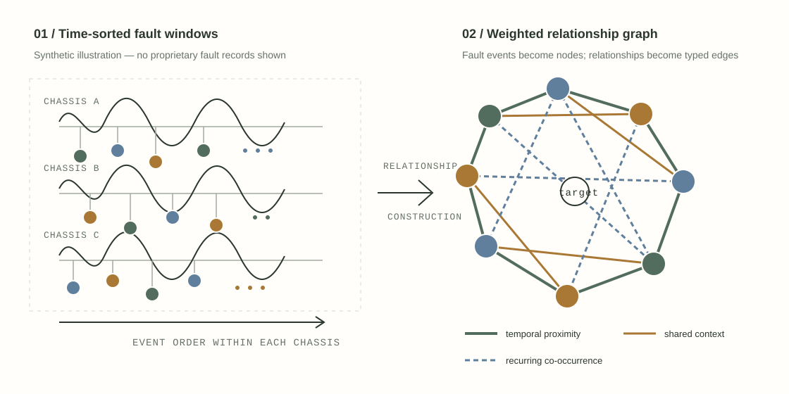

01
"Predict failure" was too vague. I rewrote the question.
Vehicle fault logs did not become useful just because there were millions of them. I reframed the work around emergency-fee existence, emergency-fee cost tier, and subsystem fault category - decisions a maintenance team could actually act on.
The hard part was deciding what the data could honestly support before optimizing a model.
PMLR 304 / ACML 2025
60% → 95% high-cost precision
Vehicle-wise chronological validation
Flagship research
From ambiguous inputs to a graph that could answer a decision. Published as Wu You in PMLR 304 / ACML 2025.